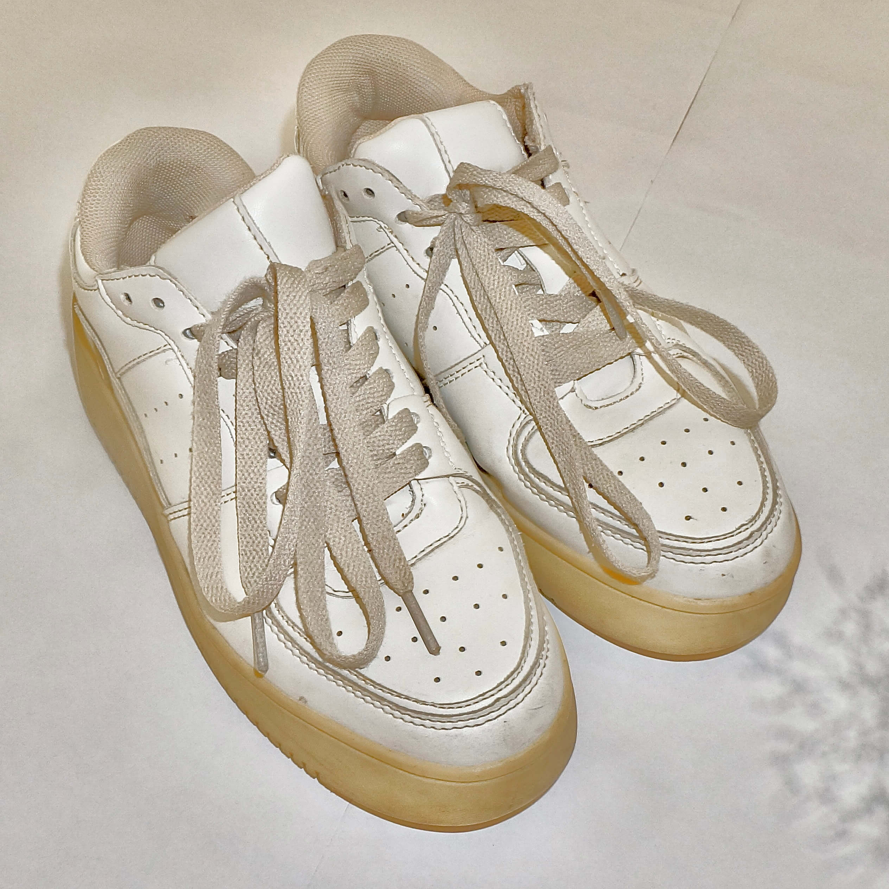

水色のシアー長袖シャツ。全体的にゆとりがあり、長め丈で抜け感のあるデザイン。
白のノースリーブ。透け感のあるアイテムと好相性で、爽やかなレイヤードスタイルに。
アイボリーのボトムス。腰のリボン結びがポイントになり、後ろ姿にほんのり甘さをプラス。

白のスニーカー。カジュアルに合わせやすく、厚底でちょっとスタイルアップも。

プラダの黒のミニポシェット。シンプルで洗練されたデザインがどんなコーデにもなじむ一品。実は母から譲り受けたお気に入り。